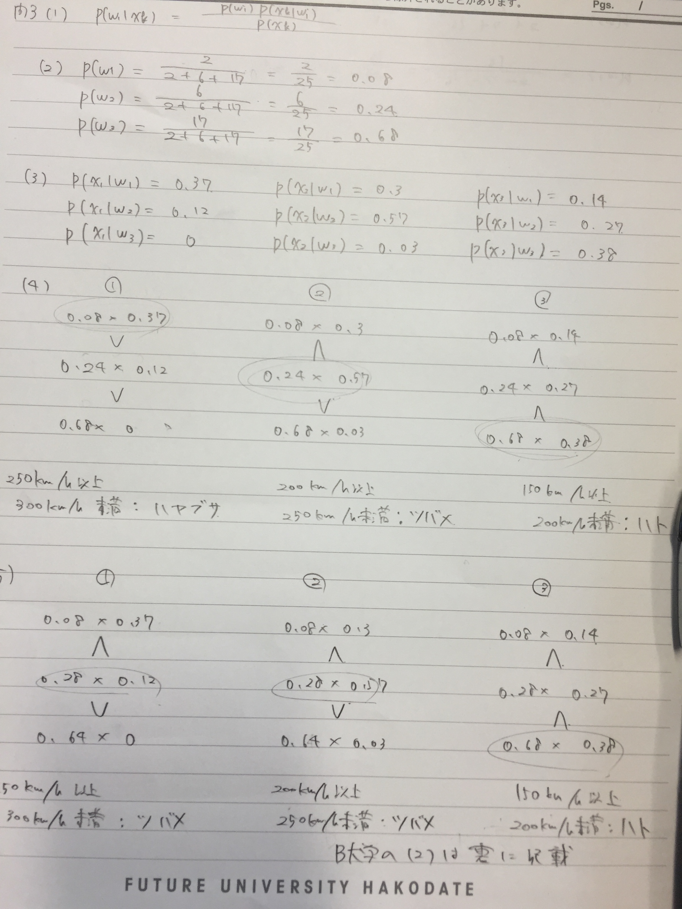

<ons-page>
    <ons-toolbar>
        <div class="left">
            <ons-back-button>戻る</ons-back-button>
        </div>
        <div class="center">購入したノート</div>
    </ons-toolbar>
    <br />
     <div align="center">  </div><br/>
    　 <div align="left">　<ons-button onclick="myNavigator.popPage()">　戻る　</ons-button>
     　　　　　　　　　　　<ons-button onclick="myNavigator.pushPage('photo_album3.html')">　次へ　</ons-button> 

</ons-page>


